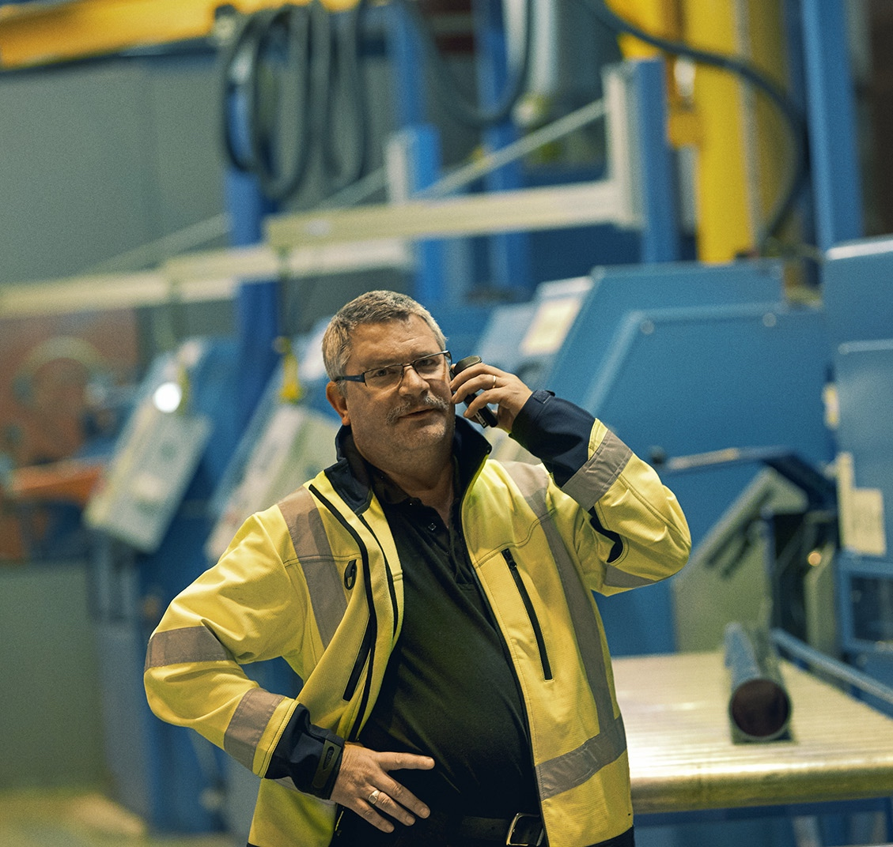
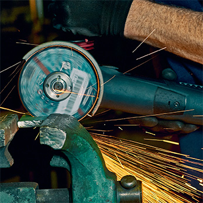
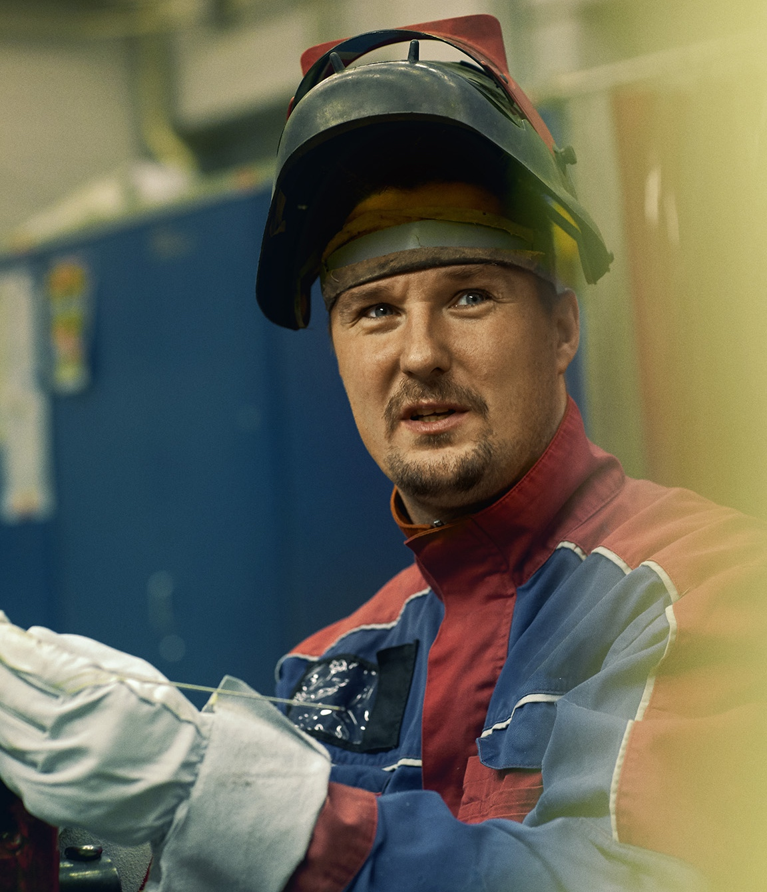
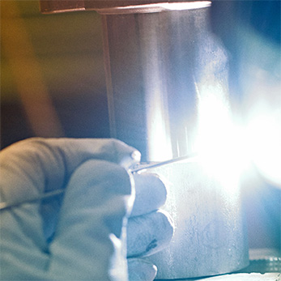

Il nostro team altamente specializzato è in grado di produrre un’ampia gamma di tipi diversi di prodotti per i clienti. I nostri servizi collaudati comprendono anche ingegnerizzazione, progettazione e produzione di prototipi, gruppi di assemblaggio e serie piccole e medie per applicazioni esigenti. Siamo fiduciosi di poter gestire tutta la logistica, nonché il supporto per i prodotti per l’intero ciclo di vita di un prodotto.
Operiamo con un’ampia gamma di settori e applicazioni, e offriamo servizi altamente specializzati all’interno dei seguenti settori, fra gli altri: Aerospazio, Trazione, Automazione, Energia, Macchine utensili, Tecnologia medica, Imballaggi e stampa, Costruzione di gruppi e Tecnologia di riabilitazione.
Lavorazione di metalli in lamine
Come veri partner operiamo in stretta collaborazione con i clienti per offrire soluzioni sofisticate per la lavorazione di metalli in lamine. I nostri specialisti possono ridurre i tempi di ciclo creando nel contempo componenti e gruppi di imballaggio innovativi, a costi contenuti, di elevata qualità, pronti per la produzione. La nostra completa gamma di strumenti e tecnologie assicura che possiamo affrontare quasi qualsiasi sfida per la lavorazione dei metalli e continuare a fornire la migliore combinazione di funzionalità e produttività.
Le nostre capacità di lavorazione dei metalli comprendono:
Ingegnerizzazione: CAD 3D / CAD 2D / Programmazione 3D / Programmazione 2D
Ingegnerizzazione inversa: Il nostro processo di scansione cattura l’intero profilo delle parti o dei modelli esistenti alla velocità del laser e memorizza i dati in file compatibili con CAD per l’utilizzo ulteriore.
Lavorazione di metalli in lamine: Taglio al laser / Stampa CNC / Stampa al laser / Stampe idrauliche ed eccentriche e macchine da stampa
Sagomatura: Smussatura CNC / Arrotondamento / Goffratura / Imbutitura
Congiunzione: Rivettatura / Graffatura / Saldatura / Brasatura dolce / Saldatura a punti
Post-trattamento: Barilatura / Spazzolatura / Galvanizzazione / Verniciatura
Assemblaggio: Prodotti pronti da installare / Consegne just-in-time

Produzione di parti nobili
Possiamo progettare e realizzare tutto, da parti di macchine semplici a quelle di alta precisione, comprese le parti basate su materiali difficili da lavorare. I nostri specialisti possono offrire indicazioni per passare dalla creazione dei prototipi iniziali ai test funzionali fino alla produzione. La nostra ampia gamma di opzioni di produzione (centri di macinazione, torni, affilatrici di superficie e cilindriche, EDM a filo e verticali e varie macchine per la foratura di crivelli) ci consente di offrire la tecnica ottimale di produzione per ciascuna applicazione.
Le nostre capacità di produzione di parti nobili comprendono:
Ingegnerizzazione: CAD 3D / CAD 2D / Programmazione 3D / Programmazione 2D
I nostri team di sviluppo e progettazione creano soluzioni per i clienti per reingegnerizzare o ottimizzare prodotti, moduli, crivelli e accessori o strumenti.
Componenti lavorati: Diverse macchine utensili all’avanguardia coprono un’ampia gamma di tecnologie di produzione quali fresatura, perforazione, tornitura, smerigliatura e cablaggio EDM; dimensioni di lavorazione del lavoro fino a 2000 x 1200 x 1500 mm.
Crivelli, accessori e strumenti: Abbiamo punti forti nella progettazione e produzione di apparecchiature di produzione, crivelli e accessori, calibri e apparecchiature di test, e abbiamo la capacità di offrire apparecchiature di bloccaggio, dispositivi di assemblaggio e sostegni per pezzi da lavorare molto precisi.
Produzione per l’assemblaggio: Gestendo la logistica e l’acquisizione quando si costruiscono e assemblano sistemi facili da azionare e moduli pronti da installare, riduciamo il numero di interfacce, il che porta a un’elevata soddisfazione dei clienti.
Materiali: Siamo specializzati per un’ampia gamma di materiali quali alluminio e leghe di rame, titanio e leghe a base di nichel come Hastelloy X, Inconel, Nimonic e Haynes.

Servizi di affilatura
Comprendiamo che l’efficacia e la durata generale in servizio di uno strumento possono essere spesso migliorate ottimizzando la geometria del bordo di taglio. I nostri specialisti possono contribuire a scegliere le giuste materie prime per l’affilatura o il rivestimento della superficie di taglio di uno strumento e la nostra esperienza all’avanguardia può aiutare a scoprire efficienze non sfruttate adottando un regime di affilatura innovativo.
Le nostre capacità di affilatura comprendono:
Affilatura convenzionale: Servizi o gamma di natura completa
Affilatura CNC: Strumenti standard / cilindrici / conici / personalizzati

Trattamento termico
I nostri servizi di trattamento termico comprendono servizi tradizionali quali ricottura, indurimento, brasatura e rinvenimento in atmosfere ordinarie, in condizioni di gas inerti o sotto vuoto. Inoltre, offriamo processi speciali quali nitrurazione / nitrocarburazione — un processo di indurimento della superficie rispettoso dell’ambiente, nonché il trattamento necessario preliminare e successivo. La nostra competenza e la nostra infrastruttura ci consentono di offrire un servizio esclusivo con lega in alluminio raffreddata e temperata, nonché il trattamento di acciaio e rame.
Le nostre capacità di trattamento termico comprendono:
Sistemi sotto vuoto: I nostri forni ad alto vuoto sono adatti per ricottura, indurimento e brasatura. La dimensione massima del lotto è 1200 x 900 x 1500 mm, con capacità di indurimento per raffreddamento da quattro lati fino a cinque bar.
Brasatura: Per la preparazione delle parti è disponibile una sala con equipaggiamento speciale. Abbiamo anche apparecchiature di saldatura a punti e un dispenser di saldatura integrato, e ci specializziamo nella brasatura utilizzando una lega per saldatura a base di nichel.
Rinvenimento: Il nostro sistema di rinvenimento per componenti in alluminio offre dimensioni di 800 mm in lunghezza e un diametro di 1200 mm, con un serbatoio di acqua riscaldata per il raffreddamento.
Indurimento, ricottura: Un serbatoio di olio caldo, azoto o argo è disponibile per il raffreddamento, la carbonizzazione, l’indurimento, la ricottura, il trattamento termico della soluzione e l’indurimento per precipitazione.
Post-trattamento: Utilizziamo sistemi di abbattimento della pressione per la finitura delle parti, impiegando sabbia o sfere di vetro. Sono anche disponibili trattamenti meccanici preliminari e successivi.
Nitrurazione e nitrocarburazione a gas: Questi trattamenti superficiali rendono le apparecchiature meccaniche straordinariamente resistenti all’usura, specialmente i componenti degli ingranaggi, le ruote degli ingranaggi, le macchine utensili e le parti degli stampi, per dimensioni dei lotti fino a 1500 x 1000 mm. Un sensore di nitrurazione monitora e controlla il processo per assicurare che sia ottenuta la qualità specificata, comprendente: elevata durezza superficiale; usura minima; resistenza alla corrosione migliorata; caratteristiche migliorate di scivolamento; e cambiamento o distorsione dimensionali minimi.

Servizi di noleggio e produzione di strumenti
Nuovi strumenti: Possiamo produrre nuovi strumenti in base a requisiti specifici. Produciamo frese, punte da trapano, perni di centraggio CNC e molti altri tipi di strumenti. I nostri specialisti sono anche disponibili per contribuire a sviluppare o raffinare le specifiche, per assicurare l’utilizzo più efficiente dei materiali e la massima qualità.
Noleggio di strumenti di misurazione, strumenti standard e personalizzati: In molte situazioni è più conveniente noleggiare le apparecchiature in base alle esigenze, piuttosto che acquistare e manutenere apparecchiature di cui si ha bisogno raramente, specialmente per strumenti sovradimensionati. Il nostro servizio di noleggio offre un’ampia varietà di opzioni a termini e condizioni attraenti.

Esempi di prodotti
Componenti per turbine a gas e a vapore:
- Combustori per turbine a gas, componenti di percorsi a gas caldo, pannelli guida per aria
- Lavorazione di palette e lame, parti di assemblaggio delle lame (ad es. blocchi e spessori), diffusori, segmenti di statori e schermi termici, deformatori a vapore e a combustione
- Retrofit di lame di turbine a gas e schermi termici (rimozione e ribrasatura dolce di guarnizioni a nido d’ape, compresa la certificazione di qualità)
- Parti per generatori idroelettrici e a turbina:
- Terminali e barre di conduttori completamente formati, lavorati e saldati sotto vuoto
- Produzione di segmenti con nucleo statore elettrico, compresa l’ingegnerizzazione e la produzione dei relativi strumenti di punzonatura.
- Supporto esterno e sistemi ausiliari:
- Pompe a ingranaggi, valvole, attuatori e trasmettitori di pressione per vapore e fornitura di olio per lubrificazione
- Dispositivi a ingranaggi per la rotazione di rotori e ulteriori parti a ingranaggi
- Apparecchiature per fabbriche e siti di costruzione
- Ingegnerizzazione, produzione e messa in esercizio di macchine speciali
- Ispezione e misurazione personalizzate – strumentazioni
- Apparecchiature di assemblaggio, trasporto e sollevamento per i componenti della turbina e del generatore
- Armadietti per strumenti completamente equipaggiati con strumenti speciali a seguito di specifiche dei clienti
- Macchine speciali per operazioni di fresatura e perforazione sul rotore
- Macchine speciali per l’utilizzo della barra di conduttori (punzonatura con perforazione / taglio, piegatura e misurazione)
- Apparecchiature di test per test di pressione e misurazioni di flusso di componenti di turbine
- Ingegnerizzazione e produzione di accessori per smerigliatura, fresatura, EDM e assemblaggio per la produzione di lame di turbine.

Certificazione
Deteniamo vari certificati relativi ai servizi di produzione, tra cui:
ISO 9001 Sistema di gestione della qualità
ISO 14001 Sistema di gestione ambientale
OHSAS 18001 Sistema di gestione della sicurezza e della salute sul lavoro
ISO 3834-2 Requisiti di qualità per la saldatura a fusione di materiali metallici
EN 15085-2 Saldatura di componenti e veicoli ferroviari
EN 9100 Requisiti per organizzazioni per aviazione, spazio e difesa